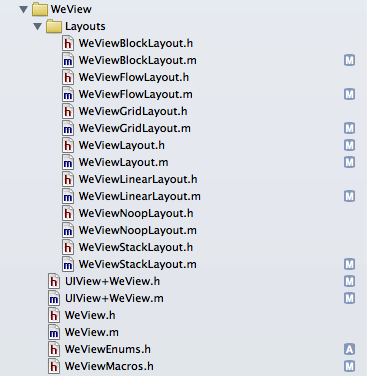

Tutorial 2: Installing
To install WeView 2, add the WeView folder to your XCode project.

The only dependencies of WeView 2 are the following iOS Frameworks: Foundation, UIKit and Quartz Core.
WeView 2 requires iOS 5 or later.
Generally it is sufficient to import a single header:
#import "WeView.h"
Classes
- The WeView container is the core class. WeView itself has no properties - only methods for adding subviews and their layouts.
- WeView layouts are subclasses of WeViewLayout.
- The UIView+WeView category adds a number of layout-specific properties to any and all UIViews that affect how they are are layed out as subviews. These properties are stored using associated objects, but have an
Next: Tutorial 3: Terminology